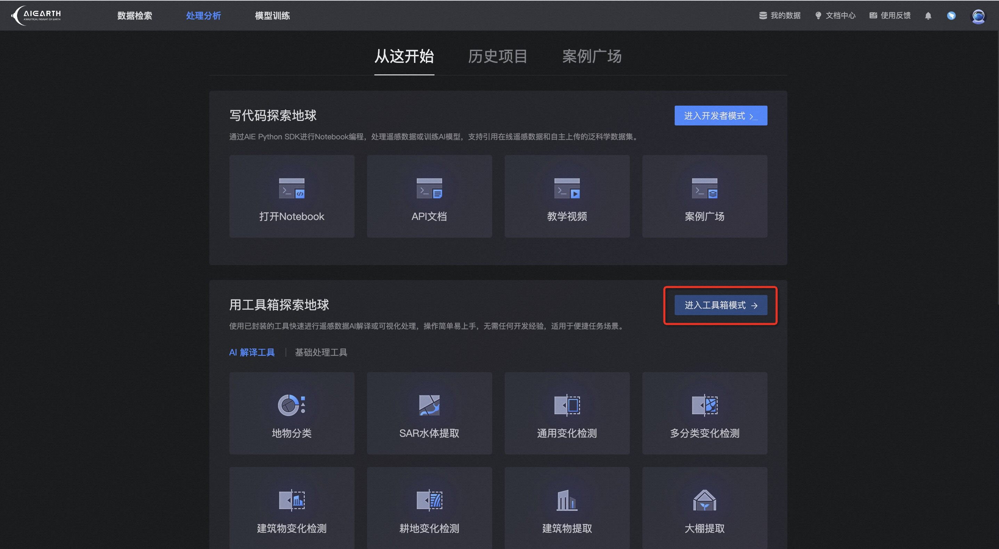

工具箱部署#
模型pipeline可部署到云平台工具箱模式下个人的AI解译工具，并通过云平台的工具箱模式从页面提交AI解译任务
本地模型推理#
模型部署到云平台之前建议先在本地进行模型pipeline链路的调试，本地运行成功之后再部署为云平台工具箱下个人的AI解译工具
本地模型推理流程请参考：本地模型推理
模型保存#
模型pipeline部署到云平台之前需要先将模型文件保存到云平台，并将模型pipeline代码的checkpoint初始化修改为from_remote_tag的方式进行模型引用
模型保存流程请参考：模型保存
模型pipeline#
将本地模型pipeline进行少许改动，进行云平台工具箱模式的参数适配，主要改动为：
checkpoint初始化方式：本地运行时的初始化方式为
from_local_path，部署到云平台时需要将初始化方式修改为from_remote_tag，通过保存到云平台的模型tag进行引用pipeline运行时的输入参数：本地运行时pipeline的输入参数可直接通过接口指定，部署到云平台时pipeline的输入参数需要通过
parse_input_args进行解析得到运行时参数
修改之后的模型pipeline代码为：
[ ]:
from aiearth.predict.checkpoint import ModelCheckpoint
from aiearth.predict.predictors import TensorrtPredictor
from aiearth.predict.processors import (
Chw2HwcProcessor,
MeanNormProcessor,
Hwc2ChwProcessor,
SqueezeNdimProcessor,
MaskBinarizationProcessor,
)
from aiearth.predict.pipelines import GeoSegmentationPredictPipeline
from aiearth.predict.adapter.toolbox import parse_input_args, InputArgs
from aiearth.predict.logging import root_logger as logger
ckpt = ModelCheckpoint.from_remote_tag(saved_model_tag)
pipe = GeoSegmentationPredictPipeline(
model_checkpoint=ckpt,
predictor_cls=TensorrtPredictor,
pre_processors=[
Chw2HwcProcessor(["image"]),
MeanNormProcessor(
["image"], [123.675, 116.28, 103.53], [0.01712475, 0.017507, 0.01742919]
),
Hwc2ChwProcessor(["image"]),
],
post_processors=[
SqueezeNdimProcessor(["image"]),
MaskBinarizationProcessor(["image"], 127.5),
],
)
logger.info("run pipeline")
input_args: InputArgs = parse_input_args()
pipe(
uri=input_args.src,
out_dir=input_args.result_dir,
temp_dir=input_args.temp_dir,
out_filename=input_args.out_filename,
)
saved_model_tag为模型保存中返回的模型tag引用，创建code_snippets目录，将模型pipeline代码保存到code_snippets目录下面，并命名为pipe.py
工具箱部署#
通过模型版本客户端将模型pipeline代码部署到云平台工具箱模式
[ ]:
from aiearth.predict.deploy.schema import (
JobConfig,
JobOutType,
ToolboxRunConfig,
)
job_config = JobConfig(
entrypoint="python pipe.py",
runtime_env={"working_dir": "./code_snippets"},
)
run_config = ToolboxRunConfig(out_type=JobOutType.VECTOR)
deploy = version.deploy_as_toolbox(job_config, run_config)
job_config为模型pipeline的部署配置，entrypoint参数是任务的运行入口，这里为保存的模型pipeline代码文件，runtime_env.working_dir为模型pipeline代码的上层文件夹路径，部署时需要将代码文件夹进行打包上传
run_config为pipeline运行时需要的配置，JobOutType.VECTOR表示模型pipeline运行输出的结果文件类型为shape文件
version是模型保存时创建的模型版本对象
查询部署状态#
查询模型部署的状态，部署状态类型有：
waiting：等待部署
deploying：部署中
finished： 部署完成
failed：部署失败
undeploying：等待取消部署
undeployed：部署已取消
[ ]:
deploy_status = deploy.get_deploy_status()
print(deploy_status)
提交解译任务#
当模型pipeline部署完成之后，可通过云平台的工具箱模式从页面提交AI解译任务
